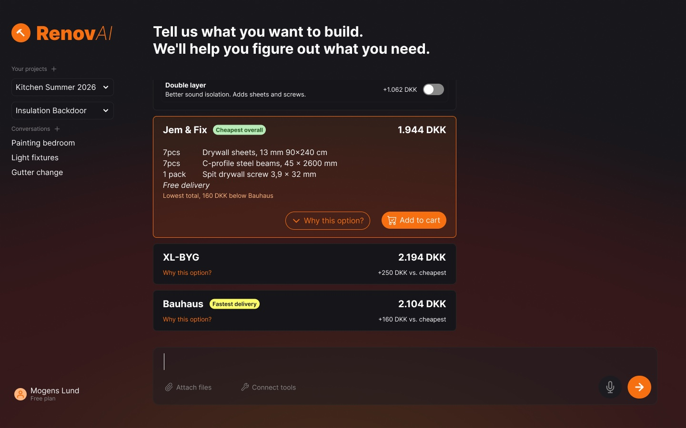
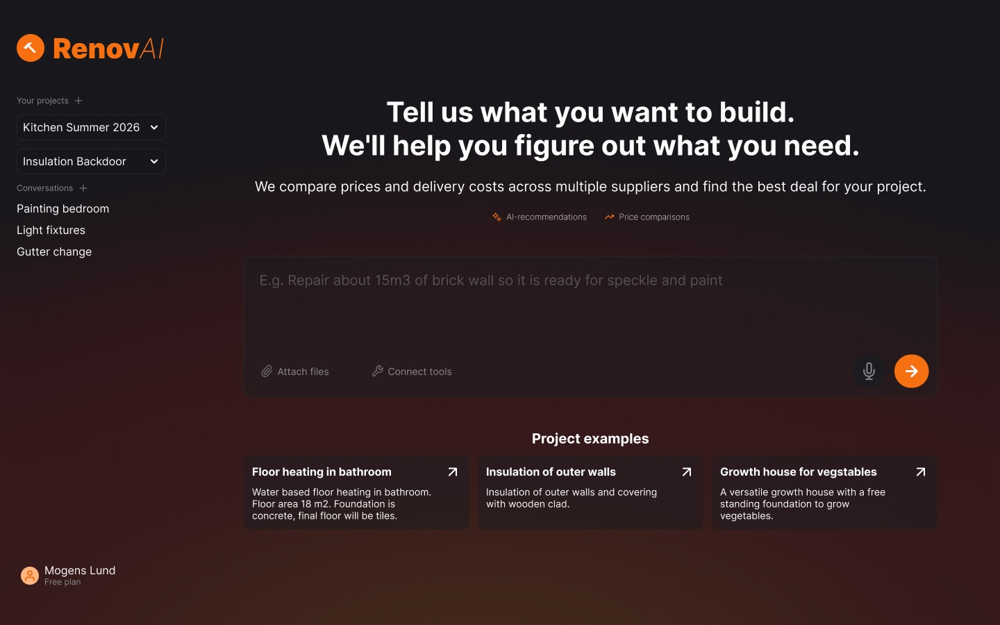
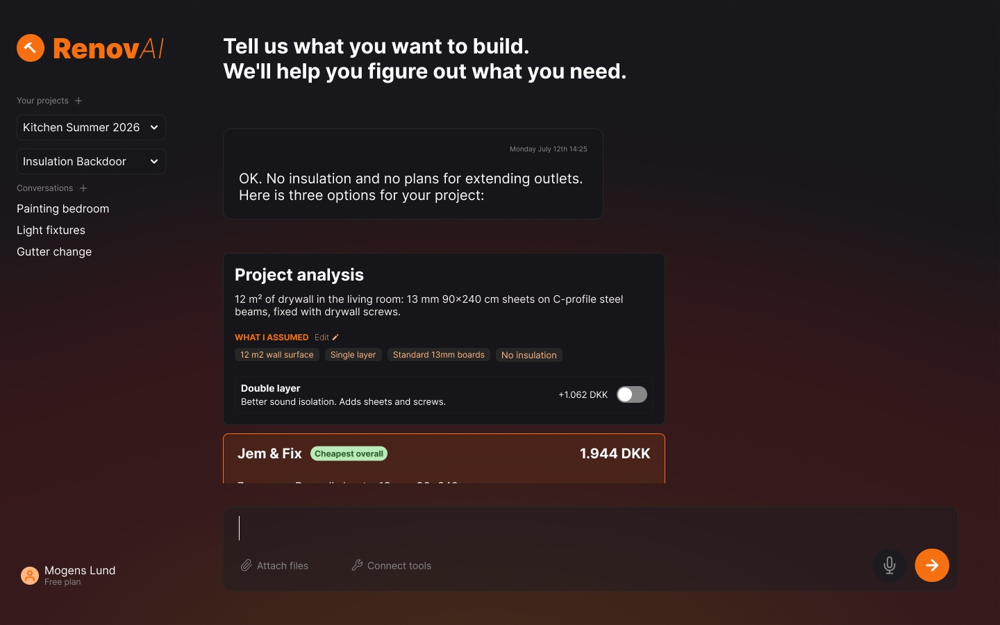

RenovAI
Tell us what you want to build.
An AI renovation assistant that turns your own description of the job into a shopping plan you can review, question and buy.
Drywall for 12 m² in the living room. Steel frame and screws needed too.

Knowing what to buy is harder than buying it
I’m renovating an old house myself, so the problem started as a personal annoyance. RenovAI turns a plain-language renovation idea into a reviewable shopping plan, and shows its reasoning at every step.
- Project
- Self-initiated UX/UI concept
- Role
- Research, UX, UI and interaction design
- Focus
- AI transparency, trust, uncertainty and user control before purchase
- Note
- All retailers, products and prices shown are illustrative.
A dozen browser tabs of hard questions before you spend
- What do I need, and is it compatible?
- How much of each, including waste?
- Which retailer is cheapest, with delivery?
- Is everything in stock at the same time?
The answers are scattered across search engines, retailer sites, spreadsheets and notes. The expensive mistakes surface late: too little material, incompatible products, or a delivery fee that erases a discount.
How might we make a renovation purchase as simple as describing what you want to build, without asking people to trust a black box?
An AI that estimates quantities and spends someone’s money will sometimes be wrong, and a wrong estimate means a wrong purchase.
Search, compare, calculate, buy becomes describe, clarify, review, approve

Describe
The project in your own words, helped by examples.

Clarify
Only what changes the estimate, echoed back as assumptions.

Review
Analysis, quantities with their math, three retailer options.
Approve
Nothing reaches the cart until you commit.
Visible assumptions
The assistant says what it assumed, in words you can check.
Verifiable numbers
Every quantity and price can show how it was calculated.
Reversible choices
Nothing is committed until you approve, and everything can be changed first.
Start from the project
One sentence replaces the product search
People think in projects (“drywall for a 12 m² wall”), not product names. One free-text field replaces the search box, with example projects underneath to remove the blank page. A microphone supports people measuring on site.
Trade-off: free text is ambiguous. “12 m²” can mean floor or wall, which the follow-up questions handle.
Ask, then say what was assumed
A few answerable questions, echoed back in plain words
Follow-ups are yes or no, answered in one tap, and repeated before anything is calculated: “No insulation and no plans for extending outlets.”
Trade-off: binary answers can’t express doubt. The next iteration adds “Not sure”, which applies a stated default and flags it.
Show the work, keep control
“Why this?” at three levels of depth
Trust is earned by checking, not by tone. A one-line reason sits on the card. “Why this?” opens inline, so the basket stays visible. The math sits under each line.
Anything the AI decided can be changed before it reaches the cart. Switch on double layer and the plan recalculates. An assumption you apply by hand is a task handed back, so it became a switch.
No confidence percentages: they imply a precision the system doesn’t have. Quantities are labelled as estimates.
Lowest total, 160 DKK below Bauhaus. Delivery included.
- Drywall sheets, 13 mm, 90 × 240 cm7 pcs, estimate
- Steel C-profiles and drywall screwsincluded
Why this?
- How much do I need?
12 m² ÷ 2,16 m² = 5,6, plus 15–20% waste, gives7 sheets.- Why this retailer?
- Lowest total for the whole basket once delivery is counted.
- What I assumed
- 12 m² is wall surface. No insulation. No new outlets.
Prices are illustrative sample data.
Three options
Each labelled by what it optimises
Someone building this weekend may pay 160 DKK for speed; the price difference turns a label into a decision. Totals include delivery.
Trade-off: three options hide the rest of the market, so “compare all” belongs behind the same card.
| Retailer | DKK | Difference |
|---|---|---|
| Jem & Fix, cheapest | 1.944 | – |
| Bauhaus, fastest | 2.104 | +160 |
| XL-BYG | 2.194 | +250 |
Not yet tested. I’d start with the three trust mechanisms.
| Hypothesis | Test | What I’d look for |
|---|---|---|
| Visible math raises trust in quantities | Five moderated sessions: “Is this enough material?”, with and without the breakdown | Fewer users checking elsewhere; higher stated confidence |
| Users correct assumptions when it’s easy | Observe use of the chips and the double-layer switch | Share who edit, and time to correct |
| Labels and price differences help people choose | Ask which option they’d pick and why | Reasons that mention the label or the difference |
In an AI product, trust is a feature you design
The project shifted my view of the AI’s job, from finding the cheapest basket to making its reasoning checkable.
- Better questions. Ask what moves the estimate, like wall height and layers, and add “Not sure”.
- Split baskets. Combinations across retailers, the real promise of optimising total cost.
- Complete projects. Include what people forget, like tracks, tape and filler.
- Test with real users, starting with the three hypotheses.